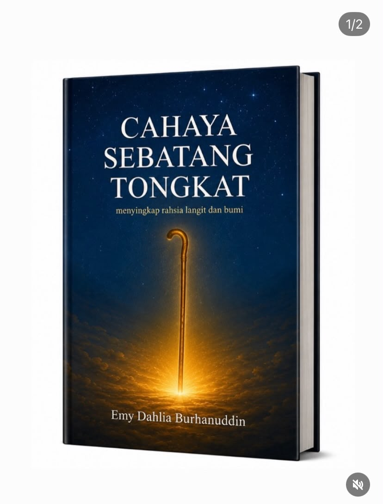
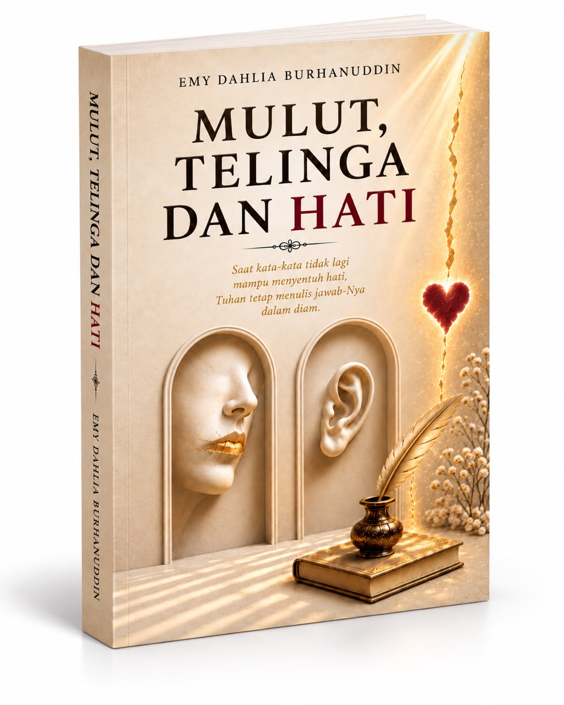

Koleksi Siri Cahaya
Buku untuk menemani sebuah perjalanan.
Terokai empat karya Emy Dahlia. Untuk maklumat pembelian, ISBN dan stok yang disahkan, hubungi Emy Dahlia Empire.

01 · Siri Cahaya
Ya Allah, Pilihlah Mereka
RM49.90
Kisah sebenar sebuah keluarga tentang doa, usaha dan keberanian mempercayai aturan Allah.
Baca sinopsis
Apakah yang berlaku apabila seorang ibu berdoa, "Ya Allah, pilihlah mereka..." lalu perlahan-lahan melihat Allah membawa anak-anaknya melalui jalan Al-Quran yang tidak pernah mampu disusunnya sendiri?
Ya Allah, Pilihlah Mereka bukan sekadar kisah tentang anak-anak yang menghafaz 30 juzuk Al-Quran. Ia adalah perjalanan sebenar sebuah keluarga yang belajar bahawa di sebalik doa, ada usaha yang panjang; di sebalik pilihan, ada pengorbanan; dan di sebalik jalan yang kelihatan tertutup, Allah mampu membuka jalan yang sama sekali tidak pernah terlintas dalam perancangan manusia.
Buku ini membawa pembaca mengikuti perjalanan seorang ibu yang pernah berhadapan dengan persoalan yang juga bermain dalam fikiran ramai ibu bapa: Jika anak memilih jalan Al-Quran, bagaimana masa depannya? Ke mana arah kehidupannya nanti? Dan mampukah kita menyerahkan sesuatu yang begitu kita sayangi kepada aturan Allah?
Daripada hafazan, tasmik, perjalanan ilmu dan usaha mendapatkan sanad, hingga impian yang membawa anak-anak menjejakkan kaki ke Kaherah, perjalanan itu tidak sentiasa berjalan seperti yang dirancang. Ada jalan yang berubah. Ada ujian keluarga. Ada kesakitan, kehilangan sumber pendapatan dan saat-saat ketika manusia tidak lagi tahu bagaimana kehidupan akan diteruskan.
Namun dalam setiap perubahan itu, satu demi satu jawapan muncul. Bukan semuanya dalam bentuk yang diminta. Bukan semuanya pada waktu yang diharapkan. Tetapi cukup untuk mengajar sebuah keluarga bahawa doa tidak pernah berdiri sendirian. Ia berjalan bersama usaha, tawakal dan kepercayaan kepada aturan Allah.
Ya Allah, Pilihlah Mereka akhirnya bukan hanya kisah anak-anak Emy Dahlia. Ia adalah sebuah renungan tentang apa yang kita doakan untuk zuriat kita, sejauh mana kita sanggup berusaha untuk doa itu, dan beranikah kita mempercayai Allah apabila jalan yang dipilih-Nya tidak sama dengan jalan yang kita bayangkan.
Mungkin setelah menutup buku ini, doa seorang ibu akan menjadi doa ramai ibu dan ayah: "Ya Allah, jika ada kebaikan pada jalan ini, pilihlah juga anak-anak dan keturunan kami untuk dekat dengan Kalam-Mu."
Tema utama: Doa seorang ibu | Keluarga dan Al-Quran | Usaha dan tawakal | Zuriat dan amanah

02 · Siri Cahaya
Cahaya Sebatang Tongkat
RM49.90
Sebuah kisah benar tentang pencarian petunjuk dan makna di sebalik mimpi, kehilangan dan peristiwa hidup.
Baca sinopsis
Bagaimana jika sesuatu yang kita sangka hanyalah mimpi, rupa-rupanya menjadi cebisan pertama kepada sebuah perjalanan yang mengambil masa bertahun-tahun untuk difahami?
Pada bulan Safar, Emy Dahlia bermimpi tentang sebatang tongkat yang bercahaya, berada di atas telapak tangannya yang sedang menadah ke langit. Ketika itu, dia tidak tahu apa ertinya. Dia juga tidak tahu bahawa 99 hari kemudian, sebuah pertemuan akan membawanya kepada sebatang tongkat yang akhirnya membuka kembali persoalan-persoalan lama yang selama ini tersimpan.
Cahaya Sebatang Tongkat membawa pembaca menyusuri rangkaian pengalaman sebenar, mimpi, kehilangan, pertemuan, gerak rasa dan peristiwa-peristiwa yang pada awalnya kelihatan tidak mempunyai hubungan antara satu sama lain. Namun ketika penulis mula menyusun kembali apa yang berlaku sepanjang tiga tahun tiga bulan, cebisan-cebisan yang berselerak itu perlahan-lahan mula menemukan tempatnya. Mengapa perkara tertentu berlaku berulang kali? Mengapa sesuatu yang pernah dilupakan muncul kembali pada waktu yang lain? Dan bagaimana sebuah benda yang kelihatan begitu biasa akhirnya menjadi pintu untuk seseorang melihat perjalanan hidupnya dengan pandangan yang sama sekali berbeza?
Tongkat itu akhirnya bukan tentang kayunya. Ia menjadi asbab kepada sebuah penyiasatan rohani, usaha seorang manusia membaca kembali perjalanan hidupnya, mencari hubungan antara apa yang dilihat, apa yang dirasakan, apa yang berlaku dan apa yang sedang Allah ajarkan kepadanya.
Di dalam perjalanan itu ada ketakutan, kehilangan, trauma, persoalan yang tidak mempunyai jawapan serta saat-saat apabila manusia hanya mampu berkata, "Alhamdulillah." Bukan kerana semuanya telah difahami, tetapi kerana sedikit demi sedikit hati belajar bahawa tidak semua jawapan diberikan sekaligus.
Cahaya Sebatang Tongkat bukan buku yang meminta pembaca mempercayai setiap pengalaman penulis sebagai pengalaman mereka. Sebaliknya, ia mengajak pembaca melihat kembali kehidupan sendiri. Pernahkah ada sesuatu yang berlaku bertahun-tahun dahulu, tetapi maknanya hanya kita fahami hari ini? Pernahkah sebuah kehilangan sebenarnya membawa kita kepada sesuatu yang lebih besar? Dan pernahkah kita terlalu memandang kepada asbab, sehingga terlupa kepada Dia yang menggerakkan segala sebab?
Kerana akhirnya, perjalanan ini bukan tentang sebatang tongkat. Ia adalah tentang manusia yang sedang mencari cahaya, mengenali petunjuk dan perlahan-lahan menemukan jalan pulang kepada Allah.
Tema utama: Pencarian | Petunjuk | Asbab | Penyiasatan rohani | Menemukan makna

03 · Siri Cahaya
Perban Cahaya
RM49.90
Sebuah perjalanan tentang luka, taharah jiwa, penerimaan dan rahmat Allah yang menjaga dalam diam.
Baca sinopsis
Bagaimana jika sesuatu yang kita lakukan sejak kecil, tanpa benar-benar memahami mengapa, rupa-rupanya menjadi sebahagian daripada cara Allah menjaga kita sepanjang perjalanan hidup?
Ada luka yang kelihatan. Ada juga luka yang tidak pernah berdarah di hadapan sesiapa, tetapi meninggalkan kesan yang panjang di dalam jiwa.
Perban Cahaya lahir daripada kesedaran bahawa sepanjang hidupnya, Emy Dahlia seakan-akan ditemani oleh sesuatu yang tidak pernah benar-benar difahaminya, sebuah amalan dan ungkapan yang telah hadir sejak kecil, tetapi maknanya hanya mula terbuka setelah dia melalui luka, kehilangan, ujian rumah tangga, ketakutan dan perjalanan panjang mengenali dirinya sendiri.
Ketika menelusuri kembali kehidupannya, penulis mula melihat bahawa mungkin tidak semua pertolongan Allah datang dalam bentuk yang kita sedari. Ada yang hadir sebagai kekuatan untuk bertahan. Ada yang hadir sebagai manusia yang datang pada waktunya. Ada yang hadir sebagai jalan yang tiba-tiba terbuka. Dan ada yang hadir begitu senyap, sehingga kita hanya mengenalinya setelah bertahun-tahun berlalu.
Itulah Perban Cahaya. Bukan perban yang menutup luka supaya ia dilupakan, tetapi balutan yang melindungi ketika luka sedang belajar sembuh.
Buku ini membawa pembaca menyusuri sebuah perjalanan daripada luka yang tidak kelihatan, kepada proses membersihkan hati, memahami taharah bukan hanya pada tubuh tetapi juga pada jiwa, belajar tentang ikhlas, doa, taubat, penerimaan dan akhirnya kembali kepada rasa kehambaan.
Di sepanjang perjalanan itu, muncul juga peristiwa-peristiwa yang sukar dianggap sekadar kebetulan. Sebuah mimpi tentang rak buku yang bercahaya. Sebuah pintu yang seakan-akan dibuka pada waktunya. Dan sebuah perjalanan yang akhirnya membawa penulis berdiri di hadapan sesuatu yang pernah dilihatnya hanya dalam mimpi.
Namun Perban Cahaya bukan buku yang mahu memberikan semua jawapan. Ia juga bukan kisah tentang mencari siapa yang bersalah dalam setiap luka. Sebaliknya, ia mengajak pembaca berhenti seketika dan bertanya: Apakah yang selama ini sebenarnya telah menjaga kita?
Ketika kita menyangka kita bertahan kerana kekuatan sendiri, mungkinkah ada rahmat Allah yang sedang membalut luka tanpa kita sedari? Dan apabila hidup meninggalkan parut yang tidak mampu kita padamkan, adakah penyembuhan semestinya bermaksud segala yang sakit itu perlu hilang?
Mungkin tidak. Mungkin ada luka yang kekal sebagai ingatan, tetapi tidak lagi mempunyai kuasa untuk menghancurkan kita.
Kerana akhirnya, Perban Cahaya bukan tentang kehidupan yang tidak pernah terluka. Ia adalah tentang bagaimana seorang manusia terus berjalan dalam keadaan masih mempunyai parut, tetapi perlahan-lahan menyedari bahawa sepanjang perjalanan itu, dia sebenarnya tidak pernah dibiarkan berjalan sendirian.
Tema utama: Luka dan penyembuhan | Taharah jiwa | Penerimaan | Rahmat dan penjagaan Allah

04 · Siri Cahaya
Mulut, Telinga dan Hati
RM49.90
Sebuah renungan tentang diam, mendengar dan menerima makna yang hadir pada waktunya.
Baca sinopsis
Bagaimana jika tidak semua jawapan ditemukan ketika kita bercakap? Bagaimana jika ada perkara yang hanya dapat difahami apabila mulut berhenti menjawab, telinga mula mendengar dan hati bersedia menerima?
Mulut, Telinga dan Hati bermula daripada satu perkataan yang terdengar ketika Emy Dahlia sedang bersolat: "Diam." Bukan sekali. Tetapi tiga kali. Ketika itu, dia belum tahu bahawa satu perkataan pendek itu akan membawanya menelusuri kembali begitu banyak peristiwa dalam kehidupannya: hari-hari di hospital, kesakitan orang yang disayangi, pertolongan yang datang melalui manusia, kata-kata yang pernah diucapkan, doa-doa lama yang menemukan jalannya, dan peristiwa biasa yang hanya kemudian memperlihatkan maknanya.
Perlahan-lahan penulis menyedari bahawa kehidupan tidak sentiasa meminta kita memberikan jawapan. Ada waktunya kita perlu diam. Ada waktunya kita hanya perlu mendengar. Dan ada waktunya hati perlu diberi ruang untuk menerima sesuatu yang tidak mampu difahami pada saat ia sedang berlaku. Di situlah mulut, telinga dan hati menemukan peranan masing-masing. Mulut melafaz. Telinga menerima. Hati menapis, menyimpan dan akhirnya memahami.
Buku ini membawa pembaca melihat bagaimana sebuah kata, sebuah pertemuan, sepinggan makanan yang dihantar pada waktunya, sebuah rumah yang ditawarkan, bantuan seorang sahabat, kesakitan, kehilangan dan doa seorang ibu boleh kelihatan seperti peristiwa-peristiwa kecil yang berdiri sendiri. Namun apabila dilihat kembali, semuanya seakan tersusun dalam sebuah perjalanan yang lebih besar. Dan di situlah syukur memperoleh makna yang berbeza. Bukan syukur kerana kehidupan sentiasa mudah. Tetapi syukur kerana setelah melalui sesuatu, hati akhirnya mampu melihat bahawa pada saat kita menyangka kita sedang berjalan sendirian, rahmat Allah sebenarnya sedang hadir dalam pelbagai bentuk di sekeliling kita.
Mulut, Telinga dan Hati bukan sekadar kisah tentang apa yang berlaku kepada Emy Dahlia. Ia mengajak pembaca kembali kepada perjalanan mereka sendiri. Pernahkah kita terlalu cepat menjawab sehingga tidak sempat mendengar? Pernahkah sesuatu yang dahulu kita anggap sebagai kesusahan, bertahun-tahun kemudian terlihat sebagai sebuah perlindungan? Dan pernahkah kita melalui sebuah peristiwa tanpa memahami mengapa, lalu suatu hari hati berkata, "Sekarang aku mengerti."
Kerana mungkin tidak semua makna perlu ditemukan pada hari sesuatu itu berlaku. Ada makna yang menunggu kita menjadi cukup tenang untuk mendengarnya. Dan kadangkala, untuk menemukannya, cukuplah tiga perkara: Mulut yang tahu bila harus diam. Telinga yang sedia mendengar. Dan hati yang rela menerima.
Tema utama: Diam dan mendengar | Kata-kata | Syukur | Penerimaan | Menemukan makna